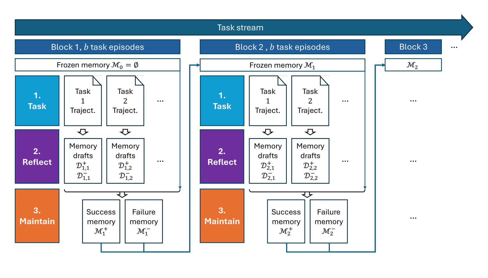
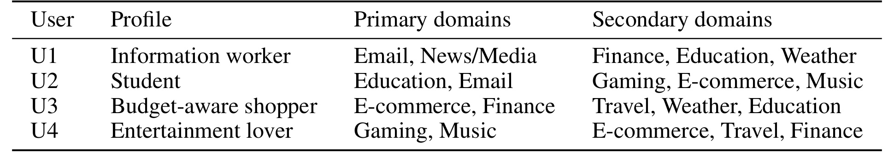
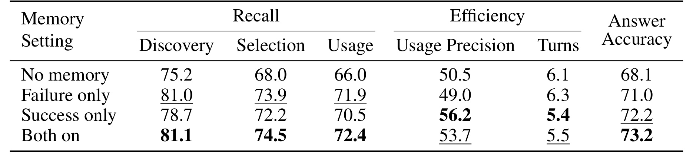
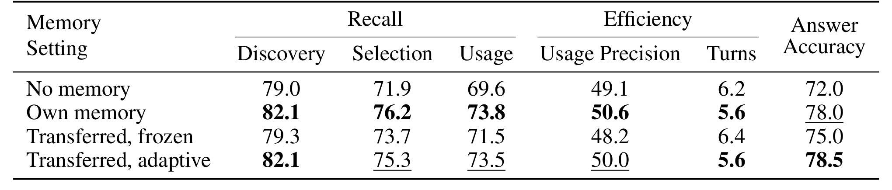
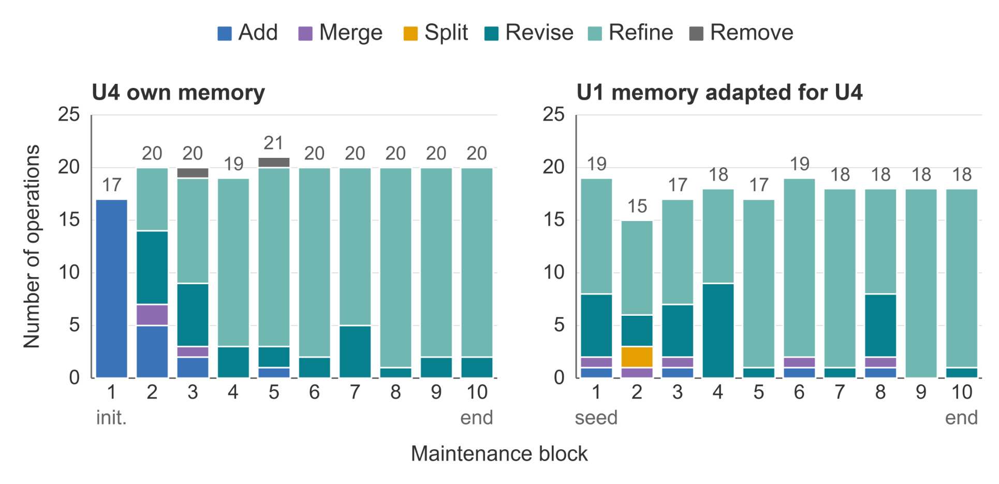
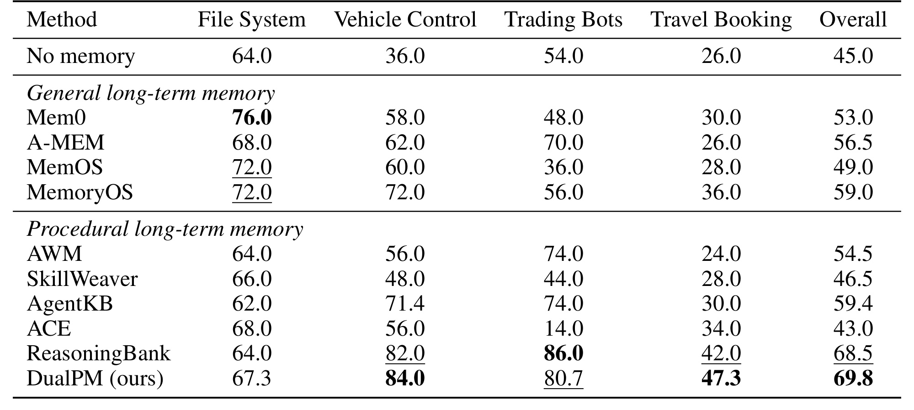
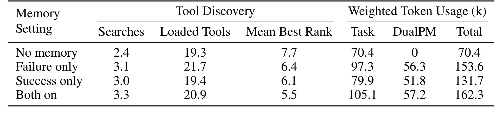
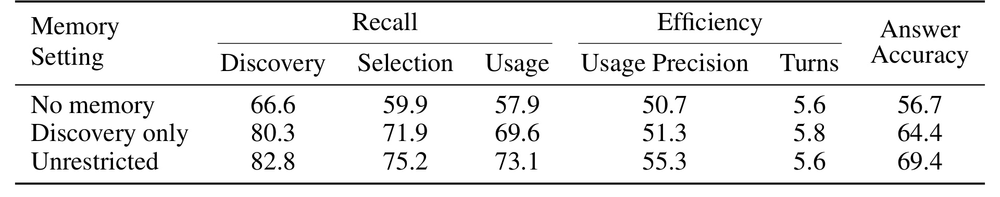

DualPM：成功与失败如何改变 Agent 的工具使用
华盛顿大学 Tianmai M. Zhang 与微软研究人员合作，研究多领域工具型 Agent 如何从一项任务内部发生的成功与失败中，分别提炼下一项任务可用的经验。论文设计了逐块更新的双极程序记忆，在同一任务流上追踪工具发现、选择、调用和最终答案。论文于 2026 年 11 月 25 日提交，出现在 11 月 26 日 arXiv 公告中。未核验到独立代码仓库。论文原文
一个最终答错的任务也可能包含值得保留的工具操作，一个最终答对的任务也可能走过应当避免的弯路。在缺少清晰终局反馈、工具信息不完整且任务领域持续变化的环境中，如何从轨迹的局部成败中提炼有限容量内仍可复用的经验？
1. 背景和问题
1.1 从任务级成败转向操作级证据
跨会话 Agent 在多个任务中重复学习同一套路，会耗在查询工具、辨认相似能力、处理格式错误，以及验证响应能否支持答案。把完整交互历史长期放入上下文会让调用轨迹随项目增长，容易把多个任务的偶然条件、工具输出和纠正过程混在一起。程序记忆试图把一段经验改造成短规则。它需要保存动作、使用条件和证据来源，因为替换工具列表或者遇到新类别任务时，接下来真正能复用的通常是检查顺序或选择条件。作者将这种规则和事实性记忆分开讨论，研究的是怎样工作，而非查询某项旧事实。评价也从是否提取出准确摘要，转向未来任务是否更快找到并正确使用工具。
引言将已有路径按反思材料划分。Agent Workflow Memory 可以把成功轨迹抽象成流程，SkillWeaver 将成功练习归纳为工具接口。Reflexion 将失败反馈转化为后续尝试的建议。ExpeL、ReasoningBank 等同时使用好坏历史，常以有明确答案的基准判定整条轨迹是否成功。若评测只保留这个终局标签，研究者无法看出是哪条局部经验改变了动作。一次答对的事务查询可能先选错工具、解析错误返回，然后用正确工具补救。用整条任务的成功作为记忆来源有机会重复保留错误尝试。一次多子任务请求最终答错，也可能在几项独立子任务上以正确顺序找到数据。这些成功做法仍值得总结，尽管整体完成指标给它零分。
论文希望从更细的证据上判断两极记忆分别帮助了什么。工具调用的错误既有能力未发现，也有已经加载却遗漏、参数值写错、证据返回后误读。初始任务给人感觉简单，有些细节却需要先找工具才能验证。局部失败有时暴露一种遗漏类型，下一次遇到话术相近的请求，Agent 会更愿意多查一条线索。局部成功可说明哪些操作能并行、什么结果已经足够、怎样指定参数可以少试两次。由此产生两种可证伪的预期。若负向经验主要帮助识别遗漏，召回应在工具发现和选择处先变化。若正向经验主要提供有效路径，执行精确度或轮数的变化应更明显。最后答案仍可能受工具返回和综合表达限制。
1.2 固定预算中的异质任务流
论文设定中，单个任务可能隐含多个子需求，Agent 一开始只能访问少数通用工具及一个工具搜索接口。一次自然语言查询返回可调用工具的描述，加载后再据工具说明产生调用。任务之间可能涉及邮件、教育、媒体、金融和其他领域。两个请求共同出现某种错误码，可以对应完全不同的处理。模型若将一种领域的具体操作当成全局通用规则，加入整池提示后可能影响许多无关请求。适用条件应尽量依靠可见的请求特征、权限状态和可靠返回，已有证据必须足以支持概括的范围。这也解释了为什么论文让每条规则保留来源轨迹、置信和触发线索，使维护阶段有机会修订过度概括。
异质流的另一个难点是容量。对于每一项任务，反思器都可以写出许多经验。若每次都追加，早期常见问题会占满提示，后续个体长期形成的偏好或新工具版本很难得到同等机会。固定容量把维护变成有约束的选择。相近内容可以合并，原有表述可用当前反例缩小范围，已经重复或失效的经验可删除。两类经验分别有自己的容量，失败频率很高时不会自动把全部成功经验挤出去。反过来，预算偏大时，两池都出现内容近似的规则，也可能在阅读时间上付两次成本。论文实验的设置属于一组实际可运行的容量参数，文中未做全面的容量灵敏度扫描。
需要将逐块在线评测和真实用户线上流量区分开理解。逐块表示先让 Agent 使用已有信息做判断，结束后才保存反馈供后续任务使用，适合检验同一时间顺序上的适应。主试验的工具后端重放标准回复，输入和工具集由基准实验组控制。真实用户通常不会在每个子任务后提供清楚的正确轨迹，工具可能返回部分结果、过期数据或第三方错误，局部结果的含义仍需人工或程序检查。因此主实验的证据能说明这个机制在固定任务流下改变了执行行为，企业真实服务的外推要补足更新周期、调用费用、权限变化以及删除记忆后的影响。
1.3 用中间量定位最终表现的来源
论文同时跟踪工具发现、选择、使用和答案。发现阶段关注必要接口能否进入可调用集合，选择阶段关注这些接口是否被尝试，使用阶段再核对必填参数与标准调用是否匹配。一个高覆盖策略可以多搜多试，结果回答更完整但精确率较低。一个谨慎策略会优先执行最有把握的部分，精确率上升却可能遗漏边缘子任务。两种变化在最后一道二元题上几乎不可分辨。若待比较的方法要同时换工具排序、改提示和换反思策略，也需要这些中间量才能判断哪一步最值得继续投入。论文的实验设计让两类极性有独立开关，这为比较局部经验方向提供了比较干净的入口。
这一问题也适用于带工具的推荐助手。例如有些请求一次提出预算、场景和时间，模型回应中的商品全部可购买，最终仍可能漏了和既有设备的兼容性核对。序列里可记录哪些能力被想到、哪些筛选条件被采纳、哪些候选从工具返回到最终展示时丢失。合并重复的成功工作流减少步骤，保留发生过条件漏检的证据能改善长尾覆盖。两类经验有不同作用，部署时可用辅助规则检验最常见的召回盲区和最昂贵的重试路径。论文并没有训练商品推荐模型，这里可迁移的是记忆更新和阶段测量方法。要验证商品候选是否真的满足用户意图，还得用产品约束、真实反馈与不同候选集下的对照补充工具执行指标。
2. 方法
2.1 分块执行和时间因果顺序
把按时间到达的任务视作从第一项到第 $n$ 项的序列。论文写出轨迹在给定任务及活动记忆下的条件生成关系，再用连续分块明确何时产出经验。模型、工具环境与 Agent 运行框架在同一对照内保持既定配置。部署中的可变状态由记忆内容以及依赖它产生的后续轨迹承载。这个设定让逐项评测不必反复训练模型。块内冻结执行，块末维护，下一块读取。预测时点因此有清楚的历史截断。
符号解释：$t_i$ 是第 $i$ 项任务，$\tau_i$ 是 Agent 产生的工具和文本轨迹，$\pi$ 是模型与执行框架规定的生成过程。 $\mathcal M_i$ 表示任务读取的活动记忆，对块 $B_k$ 内的任务，它取上一块维护后的快照 $\mathcal M_{k-1}$。$b$ 是块大小，$n$ 是任务总数，最后一块允许少于 $b$ 项。第一块用空快照，测试任务的反馈只能影响后续块。更新过于稀疏会降低近期反馈的时效性，更新过于频繁会增加维护调用和短期经验主导记忆的机会。

Figure 1 按水平方向展开三个任务块，蓝色、紫色和橙色依次标出任务执行、反思和维护。第一块的冻结记忆为空。每个任务的轨迹走自己的下行箭头，进入带有成功和失败两个上标的草稿框。块底部的两个盒子分别汇聚同类草稿，蓝线把合并后的记忆交给第二块。第二块上方出现上一块结果，图中两个任务都从这一版本读取，没有一个任务在块内使用另一个任务刚生成的信息。第三块的入口来自第二块结束后的版本。看图时要区分轨迹层的多个草稿与维护后已经修订过的列表。前者可以带着原任务上下文，后者要写成跨不同请求能读懂的做法。采用固定块内快照有助于在若干任务上比较同一提示版本，也建立了从旧任务到新任务的时间关系。一条立刻生效能救下同块后续任务的经验要等到下一块才会使用，实际部署需自己决定允许多长的更新延迟。若复制日志到维护器，索引最好随版本保存，以后可以确认哪条轨迹支持一项写入，以及该写入何时第一次被执行器读取。
图中的旧快照既供任务运行，也作为下一版维护的基线。由此会产生反馈回路，记忆改变执行，执行又提供新草稿。若一条条目引导 Agent 只用某个工具，未来可供维护器看到的反例可能变少，不能因为一个块里没有反例就给条目更大的适用范围。若单独比较维护器的效果，可以固定输入轨迹与前一块记忆，查新版本到底保留了哪些可复用步骤。另需区分任务块容量和每极条数，前者影响更新延迟，后者影响上下文读取和预算。
2.2 局部回合反思与双极维护
每条轨迹完成后，作者让模型连续调用两次。第一次把 Agent 当时可见的指令、请求、动作、工具响应和最终文本交给反思器。反馈章节可配置，例如 TRAJECT-Bench 下要观察是否找到合适能力、工具有没有按正确参数返回，外部基准的提示则围绕整体任务完成。标准调用轨迹和参考答案不会交给反思器。对照条件下的任务执行可利用当前记忆，产生的轨迹又成为后续经验来源，所以组别随着更新逐步形成不同历史。在线状态应用的是维护结果，草拟阶段看到的完整当时轨迹无需每次重新附到新请求。
第二次调用基于反思产出可复用的经验草稿。同一条轨迹可同时输出两极，各极草稿数有上限。草稿字段包含类别、便于区分的标题、可执行建议和理由、简短证据、何时适用及定性置信。草稿编号和源任务索引让以后能回查。正极保留成功做法及成立条件，负极给出如何避免或纠正一个失败路径。局部失败的观察证据可以是缺少一个独立检查、搜索词不覆盖子任务或运用返回结果时发生的错误。对已经正确完成的局部操作，应该解释哪一步和结果有关，而非只把整条执行链记一遍。真实的最终结果有可能纠正当前反思的判断，后续维护应能保留反例。
符号解释：$p$ 代表成功或失败极性，$\mathcal M_k^p$ 是第 $k$ 块结束后对应的记忆表，$m$ 是每极最多可保留的条数。每极有一次独立维护调用，读取本极旧列表及该块本极草稿，可保留、修订、合并、拆分、添加或删除条目。每条维护后的记录至多留 $e$ 条支持证据，证据的引用可来自旧条目或新草稿。符号中的并集指两类列表一起提供给下一块，同极去重发生在各自的维护调用内。缺少跨极统一归并会让同一工具规则在两类中同时存在，数量上限也无法自动解决冲突。是否需要合并两类提示，取决于条目应用条件是否被表达清楚，以及发生冲突时模型能否择其有据。
主实验令每种极性每条任务最多两份草稿，维护后每极十条，每条至多三个证据。作者估计这个配置下 GPT-5.5 生成的每极列表约上限五千令牌。条数和实际上下文长度是不同约束，很多长证据亦可出现在较少条目里。执行时将获准使用的列表全量附在系统或开发者提示，解释中说适用范围用于提示时选择，工作流未运行独立的向量搜索或分类召回。全量读取避免检索漏项和额外接口，代价是较长上下文会随每个任务重复提交，两类列表合并后也更长。论文所称训练以记忆写入为主，并不需要更新底座权重。至于压缩、保留和去重的质量，需要检查记忆文本与轨迹集合、后续使用记录的关系。
2.3 回放工具环境与阶段口径
作者从 TRAJECT-Bench 的困难任务出发，用单 Agent 执行框架提供并行工具调用和多轮交互，起初隐藏大量候选工具。Agent 反复提交搜索字符串，由 BM25 对查询和工具元数据排序，前若干可调用描述加入本轮工具集合，直到 episode 结束。命中标准调用的必填参数时，环境返回基准保存的回复。错接口或参数的调用收到通用失败信息。这个构造能区分发现、调用与正确使用，也让同一任务在不同记忆条件下的反馈相对可比。真实系统中一个工具可返回多种形式、部分证据有时也有用，回放对参数的匹配标准将这些不确定性压低。评测用的标准调用仍独立于记忆草拟，不能为了提高召回把标准路径泄露给模型。
可把使用召回与使用精确度按论文文字写成以下形式。这里用计数明确区分覆盖和重复调用。发现召回和选择召回的对象是标准工具接口，使用召回的对象是匹配参数后的标准调用。已加载工具可以不选择，已选择也未必恢复正确参数。使用精确度会记录不正确或冗余的任务相关调用。交互轮数是模型轮次，可以同时发多次工具请求，两个量需要分开观察。
符号解释：$C^\star$ 是该任务要求的标准调用集合，$C$ 是 Agent 产生的按调用及参数匹配后的调用集合，集合交集表达覆盖，重复命中不会增加标准集合的覆盖量。$N_{\mathrm{task-rel}}$ 表示 Agent 发生的任务相关工具调用计数，$N_{\mathrm{match}}$ 是其中匹配标准的调用计数。实际统计按原文工具基准定义，使用错误、格式错误和冗余调用会降低精确度。最终答案由独立裁判逐任务给出二元准确性，要求各子问题均满足。只看平均轮数会漏掉并行调用中的执行费用，只看裁判答案又会忽略正确获取证据之后的文本合成错误。将这两列和阶段召回一起保留，才能判断某类记忆让工具入口变宽，还是让动作组织更紧凑。
3. 实验结果
3.1 主实验如何构造任务流
任务由公开基准重组为四条合成画像流，每条 200 个不重复任务，分成十个二十任务块。本文主实验的 720 个评测 episode 是四条流各九块乘块内任务数，首块共享无记忆轨迹用来冷启动。各条件在同一用户和任务索引配对。主试验以 GPT-5.5 执行任务和维护记忆，Azure 部署的 DeepSeek-V3.2 判答案。按附录 D，数值对照进行双侧精确符号检验并排除平局，二元答案用精确 McNemar 检验，合并检验把各任务对视为单独配对。由于一块内共享同一记忆、相邻块由同一串状态构成，真实线上若要置信区间更稳健，宜按画像或块重新估计相关性。

Table 1 每行是一条画像，左两列是身份标签及说明，右列区分主领域与次领域。U1 的核心是邮件和媒体，U4 则为游戏和音乐，两者还可能分别从金融、出行等类别中得到任务。每二十项任务按总比率配置十四项主领域、六项次领域。表内未给每个单一领域的任务绝对数，也没有只凭画像标签推断两条序列所有事件的相似度。这个构造有助于控制时间上不同任务阶段的域比例，使总体变化较少被某一块突然多出简单任务解释。合成画像由基准预先选取日期无关的任务，未来多轮用户、真实请求漂移和多个服务策略同时改动时，域比例会随时间移动。工程上可把这张表当作复验的分层索引，对照相同任务顺序和域比例，再引入随时间偏移的新领域。各画像流中的任务都有先后关系，不能把这里的画像理解为 720 名真实用户，也不能把同画像重复任务当作独立外部样本。U1 与 U4 的设置还服务于后面的双向迁移，观察从一个主要领域学到的规则在另一组工作中是否仍有价值。
3.2 极性对照与阶段漏斗
四个条件是无记忆、仅失败、仅成功和双极。每项任务使用其分支上已有的快照。既然所有有记忆组使用同一首块冷启，后续效应同时包含被展示的极性、有了该极性后产生的新轨迹以及该轨迹引起的维护变化。这是对工作流长期使用的测试。如果目标是更严格地隔离单次提示的影响，可以在同一冻结双极列表上控制接下来一项任务只读其中一极，那会回答另一个适用问题。

Table 2 先读最左侧三个百分数，它们是必要工具与调用的覆盖。无记忆的发现、选择、使用分别为 75.2%、68.0%、66.0%。仅失败达到 81.0%、73.9%、71.9%，相对无记忆的增量分别为 5.8、5.9、5.9 个百分点。仅成功的三列是 78.7%、72.2%、70.5%，同时具有最高的使用精确度 56.2% 和最少的 5.4 轮。仅失败条件的精确度 49.0% 低于无记忆的 50.5%，轮数 6.3 高于无记忆的 6.1，显示扩大覆盖时可能多试了一些不正确或冗余动作。双极的 81.1%、74.5%、72.4% 都是表中的最高均值，同时精确度 53.7% 和 5.5 轮落在成功、失败两条件之间。这样一组数能同时说明覆盖得到保留，效率接近仅成功组，也显示两种极性仍有取舍。最右侧最终答案由无记忆的 68.1% 变为失败 71.0%、成功 72.2% 和双极 73.2%。作者报告三个记忆条件的答案均好于无记忆，但三记忆条件之间的二元答案检验全部 $p\ge 0.17$。对产品选择来说，应先看漏斗及预算。若任务要求数个子需求全部完成，少量覆盖变化可能相当关键。若系统已有好工具检索且请求主要短小，成功经验的精确度和每任务成本更值得先验收。
主文的例子是一项需要多种证据的任务，无记忆发一次宽泛查询，选到的工具只覆盖所需的两成。仅失败根据已有提醒尝试多个子任务查询，提高到八成选择召回，16 次工具调用用了十轮。仅成功也达到八成和 16 次调用，但只用了五轮。双极用五轮并在该例达到百分之百使用精确度。四路没有任何一路得到完整正确答案。这个细节能约束解读。发现阶段收回的工具为后续证据提供机会，正确调用又可以被并行，最后回答还需要覆盖所有实际要求。论文报告双极和仅成功的轮数差没有显著性，两个条件在出错轨迹上的工具覆盖则可以不同。部署中最好为多信号冲突留一组交叉统计，例如已正确拿到所有输入但仍答错，或未调用检索却依赖先验答对，方便区分工具系统和评分系统的问题。
3.3 跨画像迁移与记忆谱系
作者选择主领域差异大的 U1 与 U4，将它们最后维护出的列表双向互换。实验比较空记忆、从目标流冷启动后维护、从源流引入后保持冻结，以及从源流引入后随目标流修订。冻结可以看目标数据之前已有多少可复用操作，自适应则体现初始经验与后续本地维护的联合表现。文本强调范围限制、工具发现和参数核对等步骤可以跨域保留，特定工具名和工作流程仍需目标环境证据确认。

Table 3 给出 U1 到 U4 和 U4 到 U1 的平均结果。冻结迁移相对无记忆将选择召回从 71.9% 提到 73.7%，使用从 69.6% 到 71.5%，正确率 72.0% 到 75.0%，但精确度 48.2% 低于 49.1%，轮数由 6.2 成为 6.4。自适应把发现召回和轮数拉到与自建相同的 82.1%、5.6，选择仍为 75.3% 对自建 76.2%，使用为 73.5% 对 73.8%。自适应答案均值 78.5%，自建 78.0%，文中没有在这张表给置信区间和两方向各自结果。这个差值可说明两种做法在这两个方向上接近，无法判断热启普遍胜过用用户数据从零学习。冻结组的覆盖增加且轮数更长，也提示规则能带来一些通用查漏行为，同时引入不够贴合的尝试。若复用到不同用户，建议首先去除各账号实体或外部资源键，只比较共享的任务步骤，再允许目标流用自身反馈覆盖其不足。跨域的收益还应分前期和长期测算，表内平均不会告诉读者哪一个早期块真正获益。
另一个可对照的差值是冻结到自适应的使用召回增加两个百分点，与轮数下降同时发生。这项比较仍包含目标轨迹被不同记忆引导的动态变化，无法仅凭终点平均把收益分给某一种维护操作。源画像和目标画像都只是一条预先固定的任务流。

Figure 2 左图是 U4 自建记忆，右图是 U1 列表迁入 U4 后继续更新。横轴是十次维护，纵轴是操作数。颜色区分新增、合并、拆分、改写、润色、删除。自建第一块是十七次新增，之后仍有旧规则重写或融合，约从第五块后结构相对稳定，每块接近二十次操作且以润色为主。迁入组第一块柱子已经包含不同编辑类型，第二块可见拆分，第八块仍有添加和合并。它在发现新请求差异后继续重组原有经验。作者通过父子引用规则判断操作，单父关系的文本词级归一化编辑距离高于 0.3 归为改写，其余是小幅润色或证据更新。因此柱子高度代表被统计的维护操作，不能直接换成新增条目数或新的能力。操作细度也受文本编辑距离、草稿粒度，以及同一父条是否保留影响。图只跟踪 U4 两条运行，不能从一次密集编辑断言热启越久越好。独立复验可把操作计数与后一块工具调用、规则触发证据和陈旧条目的删除情况联看，观察维护在什么地方值得付出额外成本。
3.4 外部基准与阶段诊断
EvoMemBench 的 CrossEp-Tool 四个领域各提供 50 项有序任务，使用原框架、工具环境、任务序和结果检查器。DualPM 改用 DeepSeek-V3.2 同时执行任务与运行记忆工作流，令块长为 5 以保有十块，首五项冷启，容量参数沿用主试验。反思提示采用任务完成反馈，固定后才开始跑。它提供与 TRAJECT-Bench 的直接区别，包括底座、领域、工具运行和最终检查方式，从而看方法有没有只能依赖主试验特定接口的假设。

Table 4 将各域任务成功率横向列出，右侧 Overall 是四域宏平均。DualPM 三次独立运行均值为 69.8%，无记忆为 45.0%，ReasoningBank 为 68.5%。双极在车辆控制和旅行预订分别是 84.0% 和 47.3%，高于所列对照。交易机器人里，DualPM 80.7%，低于 ReasoningBank 的 86.0%。文件操作 67.3% 虽高于 ReasoningBank 的 64.0%，仍低于 Mem0 的 76.0%。宏平均因此表示四域表现有竞争力，保留这些反例有助于判断该迁移更可能在哪种任务有效。其他方法来自外部基准表格，运行更新频率和提示容量可能不等，文中也未给这个 1.3 个百分点差值的统计显著性。任务整体成功只说明流程最终达成目标，在这些域的哪个工具环节起主要作用，外部基准未提供主试验同一套三层召回。若自己的程序记忆服务只对少数类型工具用得很频繁，先按真实域分布和固定预算重测，再讨论总分的适用性。逐任务追踪工具有效性还能发现流程偏好在换接口后是否失效。
例如文件操作的差距提醒读者在工具结构已经高度规则化时，也许需要较具体的接口记录。反过来，旅行预订的均值领先也不能直接对应真实交易成功或客诉改善。官方检查器度量给定任务是否达成，服务中的授权、信息新鲜度、用户确认和延迟仍需单独验收。按作者描述，其他方法有可能在任务一结束就更新，DualPM 在一块内冻结。若想比较记忆格式，宜把更新边界和所有接口设置一致后再比。若想比较系统选择，可以保留各自的原生工作流，同时报告整个块等待、维护次数与累计费用。

Table 5 左边三列显示搜索动作、最终加载工具、正确工具平均最佳排名，排名数字越小越好。无记忆平均查询 2.4 次、装载 19.3 个工具、最佳排名 7.7。双极查询 3.3 次、装载 20.9、排名 5.5。正确工具更靠前与更多检索动作同时出现，不能由这些平均数单独推断重排算法已变好。仅成功搜索 3.0 次且工具数 19.4，值得结合分解查询的例子去看它如何组织子任务。右边把任务执行和 DualPM 调用令牌分列。无记忆合计 70.4 千，失败 153.6 千，成功 131.7 千，双极 162.3 千。双极交互轮数更少但加权令牌约为无记忆的 2.31 倍， 57.2 千单位在记忆工作流。任务调用也从 70.4 千提高到 105.1 千，说明常驻提示和更多工具探索改变了在线消耗。该表提供预算对账的证据，部署中还应换成实际接口的缓存命中、模型定价和尾部耗时。反思可以异步运行，用户等待时间与后端账单在不同分母上，短轮数本身无法代表低费用。
符号解释：$W$ 是作者按 2026 年 8 月所用定价比例换算的加权令牌量，未缓存输入、缓存输入、输出量分别是三个 $N$ 变量，输出包含推理令牌。权重旨在比较配置下的用量成本，价格随服务商和模型而变。当只成功策略的中间工具命中已经够用时，少 30.6 千加权单位可能优于增加未达显著的答案差值。如果覆盖缺口本身关系到是否可以完成复合任务，需以受影响用户和子任务数重新做成本效益估算。

Table 6 是作者从表现提升空间最大的 U2 中挑出的案例。逐列比较无记忆、仅让草拟器产出工具发现经验和完全开放的双极。在发现召回上，66.6% 提升到 80.3% 再到 82.8%；使用召回为 57.9%、69.6%、73.1%；答案为 56.7%、64.4%、69.4%。仅发现的平均轮数从 5.6 到 5.8，开放时重新回到 5.6，精确度由 50.7% 经 51.3% 到 55.3%。该组合为「只训练如何找工具」和「同时记住调用、证据、计划」的部署选择提供一个方向。只在前置检索留反馈已经有一定帮助，能否带动最终准确率还会经过正确执行和答案合成。U2 被刻意选为这项效果较大的用户，缺少其他画像的同项控制和区间，所以不宜把最终 12.7 个百分点当成通用收益。要拆出哪些更广的提示内容贡献了差值，可在同一容量下分别约束写入到调用参数、工具搜索、任务计划和证据整合，每个条件按同一历史开始并复验所有任务流。
这张表的仅发现条件仍同时维护正负两池，改变的是草拟器允许写入的操作范围。它无法说明只保留失败经验是否已经足以提升发现，也没有把维护调用的费用完全单列。复验时可比较同一候选数下工具搜索和正确调用的分层差别。
4. 总结
4.1 如何解释双极结果
论文用可运行的程序记忆机制，把局部成败和最终结果拆开。TRAJECT-Bench 的阶段指标显示失败经验能多找到和调用所需工具，成功经验在搜索之后的动作组织和精确度上更有价值。双极兼得最高的平均召回和接近成功组的轮数，但相较任一单极的答案优势在本文样本内没有达到显著性。对只关心最后完成的用户，应先看所处任务的工具漏斗短板与付费结构。本文最直接的工程提醒来自 Table 5，轮数下降时还要跟踪系统生成和提示的真实预算。反思和维护加入了多次模型调用，提示变长也会影响任务本身的费用。
4.2 使用这些证据时的边界
- 环境反馈仍被简化。 主实验只对匹配标准参数的动作重放正确结果，错路收到通用错误。真实平台可能暂时没有数据、工具接口改变或者存在多个等价的正确解。一次工具失败不一定值得形成全局负经验，应能标注失败来源并保留复核机会。
- 任务流和检验范围有限。 四条固定合成画像中每任务配对，有利于控制难度，却主要反映同一抽样协议。合并统计把相邻任务作为独立任务对，时间相关和相同记忆快照对线上误差的影响需要另估。跨用户实验仅有两个互换方向。
- 记忆开关与上下文预算关联。 双极可能给执行器更长提示，可以保留更多条目。主试验比较的是完整条件，未在等令牌和等候选条数的固定池中独立交换极性。由此无法量化纯极性差异在同预算下会保留多少。
- 维护质量和迁移结果仍有约束。 作者估计约每极五千令牌，固定块更新缺少在线紧急撤回。另一个基准与原方法的刷新频率、运行次数、评估细节有差别，宏平均之差不足以推导任何业务都可以替代检索式记忆。
- 最终答案含裁判误差。 使用召回有基准的可重复匹配，答案正确率由模型判断，且任何子任务遗漏都可能把整题归零。实际产品需要程序校验或人工抽查，尤其对权限、费用或不可逆工具动作要使用独立的执行验证。
4.3 可复验的三个方向
- 先在同一批多子任务请求和同一提示长度下复验无记忆、成功、失败、双极。以共同的启动轨迹构建四路，在每用户每任务对齐设定，看召回、错误、令牌以及答案。把首次发现、检索结果排序与动作匹配拆开，观察负向约束到底补了哪个环节。
- 固定已取得的轨迹和证据，比较按任务立即更新、按二十项更新和按严重错误触发的更新。同步报告反馈到生效的滞后、错误经验的持续长度、维护次数和对在线费用的影响。若样本之间差异来自新工具版本，要明确版本切换时间。
- 用一个新的域流做盲测，预先约定哪些通用规则可被跨域加载，以及哪些证据必须留在原任务范围。热启后复盘规则遇到反例时是否主动收缩条件，检查删除源事件后衍生条目是否也撤除，并与空记忆冷启和冻结记忆做配对比较。把工具动作和用户偏好分别记录，有助于避免用一次操作错误给用户贴长期标签。